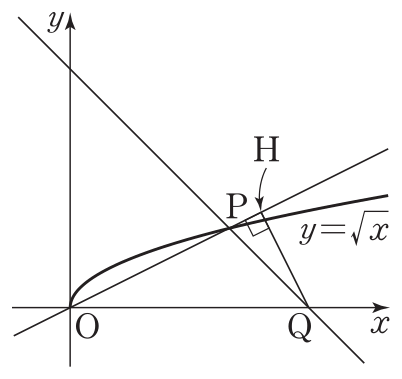

2026학년도 2학기 | 미적분 I
\(x \to \infty\)일 때 \( \dfrac{3x^2 - x + 1}{x^2 + 2x - 5} \)의 값은 어디로 갈까? 분자와 분모가 둘 다 \(\infty\)로 발산하는 상황에서, "\(\infty / \infty\) 니까 답도 \(\infty\) 또는 1"이라고 답하면 거의 항상 틀린다.
[개방형 발문] 큰 수에 비해 작은 수는 "무시"해도 될까? 예를 들어 \(x = 1000\)일 때 \(3x^2 = 3{,}000{,}000\)이고 \(-x + 1 \approx -999\). 두 항의 상대적 크기를 비교해 보고, 무한대로 가는 식에서 "지배하는 항"을 식별해 보자.
[연결] 지난 시간(02차시)에 \( \dfrac{0}{0} \)을 인수분해·유리화로 해체했다. 오늘은 그보다 더 까다로운 \( \dfrac{\infty}{\infty} \), \( \infty - \infty \), \( 0 \cdot \infty \) 세 가지 부정형(미정형, indeterminate form)을 다룬다. 핵심 전략은 단 하나 — 식을 동등 변형해 사칙 성질을 적용 가능한 형태로 바꾸는 것.
극한값을 그대로 대입했을 때 그 자체로는 값을 결정할 수 없는 형식을 부정형이라 한다. 본 차시에서 다루는 네 가지는 다음과 같다.
① \( \dfrac{0}{0} \) 형
분자·분모 모두 \(0\)으로 수렴. 인수분해 · 유리화.
② \( \dfrac{\infty}{\infty} \) 형
분자·분모 모두 \(\infty\)로 발산. 분모의 최고차항으로 분자·분모를 나누기.
③ \( \infty - \infty \) 형
두 발산항의 차. 유리화(켤레 곱) 또는 통분.
④ \( 0 \cdot \infty \) 형
0으로 가는 항 × 무한대 항. 분수 형태로 변환해 ①②로 환원.
📌 핵심 자세: 부정형은 값이 정해지지 않은 형식일 뿐, 극한이 존재하지 않는다는 의미가 아니다. 식 변형 후 진짜 극한값이 드러난다.
유리식 \( \dfrac{f(x)}{g(x)} \)에서 분자·분모를 분모의 최고차항으로 나눈 뒤 \( \dfrac{1}{x^k} \to 0 \) (\(k > 0\), \(x \to \pm\infty\))을 사용한다.
예제:
\( \displaystyle \lim_{x \to \infty}\dfrac{3x^2 - x + 1}{x^2 + 2x - 5} = \lim_{x \to \infty}\dfrac{3 - \tfrac{1}{x} + \tfrac{1}{x^2}}{1 + \tfrac{2}{x} - \tfrac{5}{x^2}} = \dfrac{3 - 0 + 0}{1 + 0 - 0} = 3 \)
🚀 한눈 판정 (다항식의 분수 극한, \(x \to \infty\))
근호가 포함된 차 \( \sqrt{A} - \sqrt{B} \) 또는 \( \sqrt{A} - C \) 꼴은 분모를 \(1\)로 두고 분자에 켤레식을 곱·나눠 합리화한다.
예제:
\( \displaystyle \lim_{x \to \infty}\left(\sqrt{x^2 + x} - x\right) = \lim_{x \to \infty}\dfrac{(\sqrt{x^2+x}-x)(\sqrt{x^2+x}+x)}{\sqrt{x^2+x}+x} \)
\( = \displaystyle \lim_{x \to \infty}\dfrac{x}{\sqrt{x^2+x}+x} = \lim_{x \to \infty}\dfrac{1}{\sqrt{1+\tfrac{1}{x}}+1} = \dfrac{1}{2} \)
\(x \to -\infty\)에서 \(\sqrt{x^2} = |x| = -x\)이므로, 무리식을 \(x^k\)로 나눌 때 부호가 뒤집힌다.
예: \( \displaystyle \lim_{x \to -\infty}\dfrac{x - 1}{|x| + 3} \)
\(x \to -\infty\)에서 \(|x| = -x > 0\). 분자·분모를 \(x\)로 나누면 \( \dfrac{1 - \tfrac{1}{x}}{\tfrac{|x|}{x} + \tfrac{3}{x}} = \dfrac{1 - 0}{-1 + 0} = -1 \)
⚠ 함정: \( \dfrac{|x|}{x} \)는 \(x > 0\)이면 +1, \(x < 0\)이면 -1. \(x \to -\infty\)는 후자.
최고차항 비교로 \(\dfrac{\infty}{\infty}\) 처리
\(\infty - \infty\) 유리화 + \(0 \cdot \infty\) 변환
"틀려야 는다!" \(x \to -\infty\) 부호 함정
"절댓값은 그냥 양수니까 \(|x| \approx x\)로 두고 \( \dfrac{x}{x} = 1\)이지!"라고 답하면 틀린다.
\(x \to -\infty\)에서 \(x < 0\)이므로 \(|x| = -x\). 분자·분모를 \(x\)로 나누면 \( \dfrac{1 - 1/x}{|x|/x + 3/x} \), 여기서 \( \dfrac{|x|}{x} = \dfrac{-x}{x} = -1 \).
따라서 극한값은 \( \dfrac{1}{-1} = -1 \). 절댓값과 부호의 동시 처리는 음의 무한대 문제의 시그니처.
📖 출처: 수능특강 수학Ⅱ · 함수의 극한 · 유제 6
난이도 ★★★ (학습지 max+2, 7분) · 핵심: \(x \to -\infty\) 무리식 — 치환 \(t=-x\)로 양의 무한대 환원
핵심: \(x \to -\infty\) 무리식은 \(t = -x\) 치환으로 \(t \to +\infty\) 문제로 환원해 부호 실수를 방지. 분자에 무리식이 있을 때 특히 효과적.
📖 출처: 수능특강 수학Ⅱ · 함수의 극한 · 기본 7
난이도 ★★★★ (학습지 max+2, 9분) · 핵심: 도형 + \(\infty\) 극한 — 길이를 \(t\)의 함수로 표현 후 차수 비교

핵심: 도형 + \(\infty\) 극한은 "변수 \(t\)로 길이 정확 정리 → 분모·분자 차수 비교"가 정형. 피타고라스와 점-직선 거리 공식이 두 도구.
스마트폰으로 우측 QR코드를 스캔하여, 아래 3가지 유형 중 하나 이상을 체크하고 통합 서술형으로 작성해 제출한다.